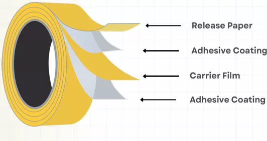

01
Double Side Drape construction Plastic Tape - Normal Skin / Adult
02
Double Side Drape construction Plastic Tape - Sensitive Skin
03
Double Side Drape construction Paper Tape - Normal Skin / Adult
Double-sided Drape construction tape – Comes in a No Show (clear) international look with skin-friendly (certified) adhesive. We have 3 different grades for different applications.

Tape Construction

01
Double Side Drape construction Plastic Tape - Normal Skin / Adult
Most commonly used grade. Works across a large temperature range and relative humidity across India. It is extremely versatile, adhering to various kinds of non-woven fabrics and skin.
02
Double Side Drape construction Plastic Tape - Sensitive Skin
Specially developed grade for soft, sensitive skin of children.
03
Double Side Drape construction Paper Tape - Normal Skin / Adult
Double-sided drape construction tape with tissue paper as a carrier.